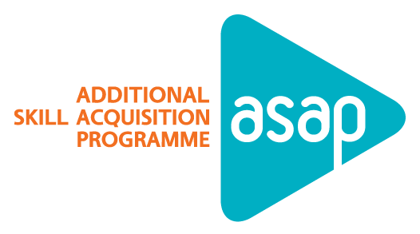
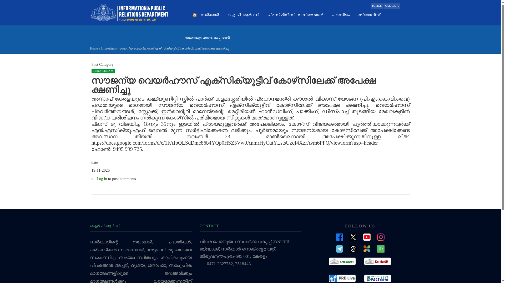

Free PMKVY Warehouse Executive course at ASAP Kalamassery: official notice gives 23 November deadline
ASAP Kerala's Community Skill Park in Kalamassery is inviting applications for a free Warehouse Executive course under PMKVY, according to Kerala I&PRD's notice dated 19 November 2026. The notice gives 23 November 2026 as the application deadline and says seats are limited.
Who can apply?
- Plus Two passed.
- Age 18 to 35, as stated in the official notice.
- Able to attend the course at Community Skill Park, Kalamassery. This is a centre-based training opportunity, not an advertised online course.
The notice does not state an age cut-off calculation date or other batch-specific selection rules. Ask the centre if you are near an age boundary or need to confirm eligibility. Limited seats means submitting the interest/registration form is not a guaranteed admission.
What does the course cover?
The notice lists warehouse operations, stock and inventory management, material handling, packing and dispatch. It says successful completers will receive NSQF Level 3 certification. These are the organiser's descriptions, not learning outcomes independently tested by AiCoN.
The notice describes the course as fully free. We did not go through a payment or admission process, and do not promise travel, food, accommodation, stipend or equipment allowances. The notice makes no placement guarantee. Confirm incidental expenses directly with the centre before committing.
How to reach the registration form
- Start with the official Kerala PRD notice.
- Follow its Google Forms link. The public Warehouse Executive form identifies ASAP Kerala's CSP Kalamassery and PMKVY.
- Read the current form and check the course name before entering information. In our account-free public retrieval, the form displayed required email collection plus name, qualification, email ID, place and contact number.
- Only enter your own accurate details after reviewing the form and its account/email notice. We did not fill fields or press Submit, so successful submission, confirmation messages and selection follow-up are untested.
- Use the centre's official contact if the form closes, the course title changes or you need joining instructions. The stated deadline is 23 November; no closing time was specified in the notice.
Do not send your passwords, Aadhaar, bank information or certificates to AiCoN. Those were not part of the public field list we inspected. The public form collects personal contact information for this course; its longer retention and sharing terms were not established in our check.

Where is the centre?
The official ASAP centre page lists ASAP Community Skill Park, KINFRA Industrial Park, HMT Colony, Kalamassery, Ernakulam, Kerala. It gives 9495999725, the same phone number as the PRD notice, and cspkalamassery@asapkerala.gov.in.
Ask the centre for course start date, daily timetable, total duration, attendance requirements, selection process, accessibility support and any incidental expenses. These were not specified in the batch notice we checked.
Do not mix up different courses
This notice is for the PMKVY Warehouse Executive batch at Kalamassery, with the 23 November deadline. Other ASAP logistics courses may have different fees, eligibility and dates. An older PMKVY course list elsewhere on the ASAP site carries a 2024 registration date, and is not evidence of this batch's schedule.
Sources and test limits
- Kerala I&PRD, 19 November 2026, 20:38: free course, eligibility, subject areas, NSQF Level 3, deadline and form route.
- PRD-linked Warehouse Executive form: public course identity and visible registration fields, retrieved without an account. No form submitted.
- ASAP CSP Kalamassery: centre address, phone and email.